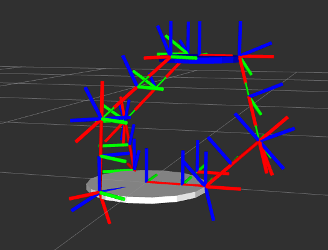
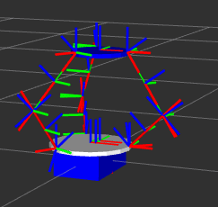
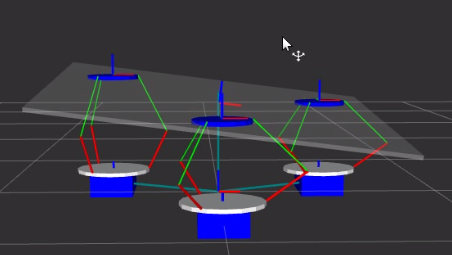

Goal
This project is trying to simulate a three-robot system by using trep and rviz. In this system, each robot consists of one mobile base robot and one inverse delta robot. And the simulation for this system is about moving one object from one position to another position by controlling these three robots.
Syetem Description
1. Inverse Delta Robot
An inverse delta robot is the inverse version of a delta robot. It is a type of parallel robot, and also a closed loop system. It consists of three arms connected to universal joints at the base. The key design feature is the use of parallelograms in the arms, which maintains the orientation of the end effector.
The inverse delta robot contains 21 DOF, and three constraints. It also has been implemented three springs at the bottom joints.
The image shows how the inverse delta looks like and it's frames.
2. Mobile Base Robot
A mobile base robot is a simple robot with 3 DOF. One inverse delta robot attaches to one mobile base robot, which is one of the three robots in the system. The final robot contains 24 DOF and 3 constraints.
The image shows a final robot.
3. The whole system
The whole system contains three robots I mentioned above, and a 6 DOF object, which attaches to the three robots. Thus, this system has four closed loop systems, three for three inverse delta robots, and one for the objects plus three robots. This system has 78 DOF, with 15 constraints.
This image shows the system.
4. Simulation
To test how this system works, I designed three trajectories.
1). Circle
Keep each inverse delta robot stays at the a certain position, use kinematic control for each mobile base robot to make it run as a circle, then the object can follow a circle path. It show in the first part of the video.
2). Square
Keep each inverse delta robot stays at the a certain position, use kinematic control for each mobile base robot to make it run as a square, then the object can follow a square path. It show in the second part of the video.
3). Object rotation
Keep each mobile base robot stays at the a certain position, use kinematic control for each inverse delta robot to make it reach desired position, then the object can rotate by different angles. It show in the third part of the video.
Future Work
From the video, we can see that this system can be controlled appropriately, while the control method I use is kinematic control for mobile base robot or inverse delta robot. So next step should be
1). control inverse delta robot and mobile base robot simultaneously for a specific trajectory.
2). Develop a higher controller, which uses inverse kinematics to control inverse delta robot and mobile base robot simultaneously by implementing a trajectory of the object.